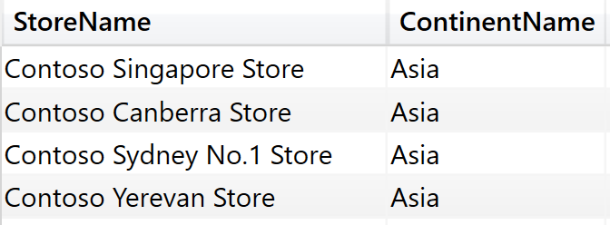

Virtual Tables
CALCULATE filter arguments are tables. When authoring complex formulas, an ability to build the correct filter table is of paramount importance.
CALCULATETABLE
Evaluates a table expression in a context modified by filters.
EVALUATE
CALCULATETABLE ( Geography, Geography[ContinentName] = "Europe" )

ADDCOLUMNS
Returns a table with new columns specified by the DAX expressions.
EVALUATE
ADDCOLUMNS ( VALUES ( Geography[ContinentName] ), "@Profit", [Profit] )

SUMMARIZE
Creates a summary of the input table grouped by the specified columns.
EVALUATE
SUMMARIZE(Sales, Stores[StoreName], Geography[ContinentName])

SUMMARIZECOLUMNS
Create a summary table for the requested totals over set of groups.
EVALUATE
SUMMARIZECOLUMNS (
Stores[StoreName],
Geography[ContinentName],
"@Profit", [Profit]
)

CROSSJOIN
Returns a table that is a crossjoin of the specified tables.
EVALUATE
CROSSJOIN ( VALUES ( Stores[StoreName] ), VALUES ( Geography[ContinentName] ) )
UNION
Returns the union of the tables whose columns match.
EVALUATE
Union ( VALUES ( Stores[StoreName] ), VALUES ( Geography[ContinentName] ) )

INTERSECT
Returns the rows of left-side table which appear in right-side table.
DEFINE
VAR tbl_Stores =
VALUES ( Stores[StoreName] )
VAR tbl_Filter = { "Contoso Redmond Store", "Contoso Sunnyside Store" }
EVALUATE
INTERSECT ( tbl_Stores, tbl_Filter )

EXCEPT
Returns the rows of left-side table which do not appear in right-side table.
DEFINE
VAR tbl_Stores =
VALUES ( Stores[StoreName] )
VAR tbl_Filter = { "Contoso Redmond Store", "Contoso Sunnyside Store" }
VAR tbl_ExceptStores =
FILTER ( tbl_stores, NOT Stores[StoreName] IN ( tbl_Filter ) )
EVALUATE
EXCEPT ( tbl_Stores, tbl_ExceptStores )

SELECTCOLUMNS
Returns a table with selected columns from the table and new columns specified by the DAX expressions.
EVALUATE
DISTINCT (
SELECTCOLUMNS (
'Calendar',
"Jahr", 'Calendar'[YearName],
"Monat", 'Calendar'[MonthName]
)
)

DATATABLE
Returns a table with data defined inline.
EVALUATE
DATATABLE (
"Name", STRING,
"ID", INTEGER,
{
{ "Small", 1 },
{ "Medium", 2 },
{ "Large", 3 }
}
)
ORDER BY [ID]

GENERATESERIES
Returns a table with one column, populated with sequential values from start to end.
EVALUATE
GENERATESERIES ( 1, 3, 0.5 )

NATURALINNERJOIN
Joins the Left table with right table using the Inner Join semantics.
DEFINE
VAR tbl_Stores =
VALUES ( Stores[StoreName] )
VAR tbl_Filter =
DATATABLE (
"Stores[StoreName]", STRING,
{
{ "Contoso Redmond Store" },
{ "Contoso Sunnyside Store" }
}
)
EVALUATE
NATURALINNERJOIN ( tbl_Stores, TREATAS ( tbl_Filter, Stores[StoreName] ) )
NATURALLEFTOUTERJOIN
Joins the Left table with right table using the Left Outer Join semantics.
DEFINE
VAR StoresByContinent =
DISTINCT (
SELECTCOLUMNS (
ADDCOLUMNS (
SUMMARIZE ( Sales, Stores[StoreName], Geography[ContinentName] ),
"@CountStores", CALCULATE ( COUNTROWS ( Stores ), REMOVEFILTERS ( Stores[StoreName] ) )
),
"Geography[ContinentName]", Geography[ContinentName],
"@CountStores", [@CountStores]
)
)
VAR ProfitByContinten =
SUMMARIZECOLUMNS ( Geography[ContinentName], "@Profit", [Profit] )
EVALUATE
NATURALLEFTOUTERJOIN(storesByContinent, ProfitByContinten)

GENERATE
The second table expression will be evaluated for each row in the first table. Returns the crossjoin of the first table with these results.
DEFINE
VAR BaseCalendar =
CALENDAR ( DATE ( 2021, 1, 1 ), DATE ( 2021, 1, 3 ) )
EVALUATE
GENERATE (
BaseCalendar,
VAR BaseDate = [Date]
VAR YearDate = YEAR ( BaseDate )
VAR MonthNumber = MONTH ( BaseDate )
VAR YearMonthNumber = YearDate * 12 + MonthNumber - 1
RETURN ROW (
"Day", BaseDate,
"Year", YearDate,
"Month Number", MonthNumber,
"Month", FORMAT ( BaseDate, "mmmm" ),
"Year Month Number", YearMonthNumber,
"Year Month", FORMAT ( BaseDate, "mmm yy" )
)
)